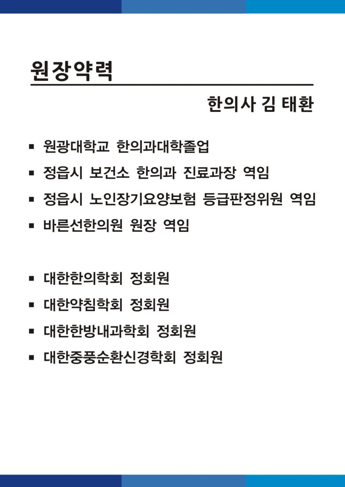

OUR DOCTOR
의료진 소개
김태환 원장의 학력과 주요 경력, 학회 활동을 안내합니다.
학력 및 주요 경력
- 원광대학교 한의과대학 졸업
- 정읍시 보건소 한의과 진료과장 역임
- 정읍시 노인장기요양보험 등급판정위원 역임
- 바른선한의원 원장 역임
학회 활동
- 대한한의학회 정회원
- 대한약침학회 정회원
- 대한한방내과학회 정회원
- 대한중풍순환신경학회 정회원
기존 약력 이미지 보기

PLAN YOUR VISIT
오성한의원에 방문하시려면
진료시간과 위치를 확인하고 편안하게 찾아오세요.
진료 문의는 전화로 안내해 드립니다.